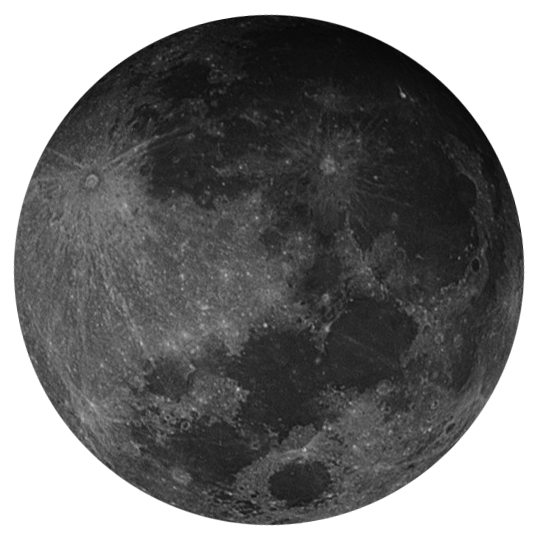
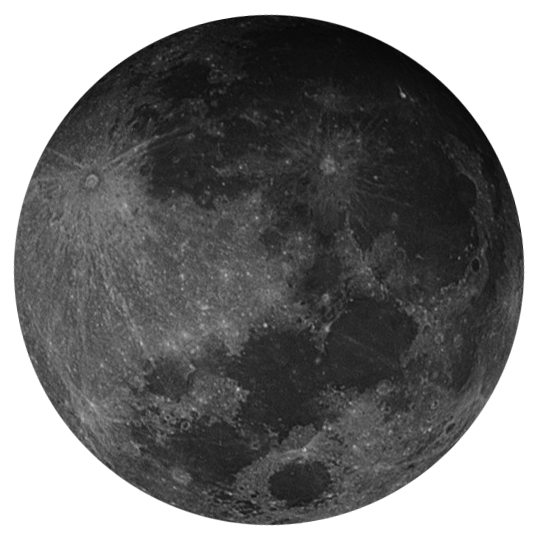

The Moon and I
by Annette Wynne
We played a game—the moon and I,
The moon was laughing in the sky,
I spied her, too, and called aloud,
But still she hid behind a cloud.
New
Waxing Crescent
First Quarter
Waxing Gibbous
Full
Waning Gibbous
Third Quarter
Waning Crescent
The Phases of the Moon
We played a game—the moon and I,
The moon was laughing in the sky,
I spied her, too, and called aloud,
But still she hid behind a cloud.

 
